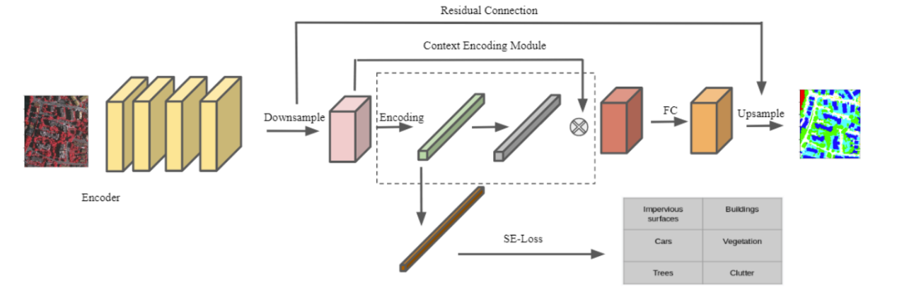
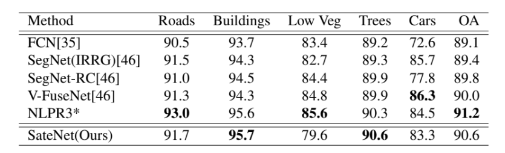
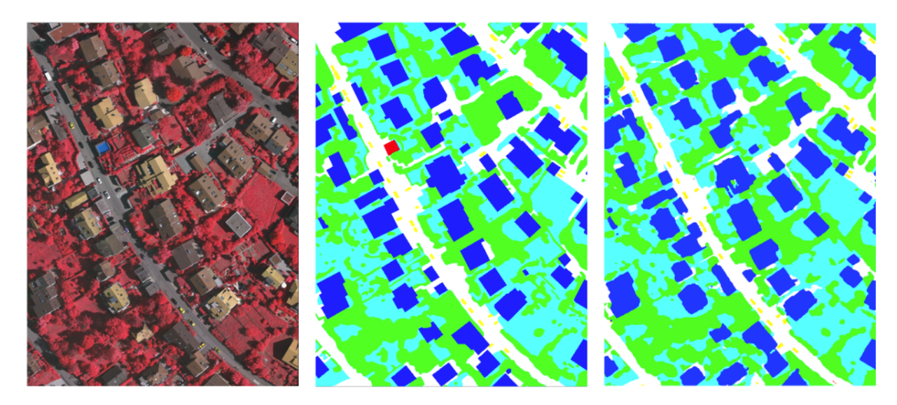

| Status: | Undergraduate Student |
| Program: | Computer Science |
| School: | New York University Abu Dhabi |
| RA Period: | From 2019-09 to 2020-05 |
| I'm a Co-founder of Opus foundation. Before that, I was a research assistant in New York University Abu Dhabi, advised by Professor Yi Fang. I am broadly interested in 3D Computer Vision, Pattern Recognition and Deep Learning. |
Recent work in semantic segmentation has shown the effectiveness of context encoding in allowing neural networks to model spatial context for better performance. We set out to apply this development to the field of remote sensing. Our focus is to develop a new approach for semantic segmentation of Very High Resolution (VHR) images. This class of aerial images is often difficult to attain high quality semantic labels for, given the distinct challenges that come with images that have been remotely sensed via satellite or other aerial mechanisms. We make use of a lightweight architecture of convolutional neural networks, combined with con- text encoding to attain strong performance on the Vaihingen 2D semantic labeling competition. Our approach attains a competitive overall accuracy, as well as a strong classwise performance.
Figure 1: The pipeline of the proposed method.
In this project, we develop SateNet which make use of a lightweight architecture of convolutional neural networks, combined with context encoding to attain strong performance on the Vaihingen 2D semantic labeling competition. SegNet is computationally inexpensive. It has just 5 convolutional blocks in its encoder and decoder respectively. The encoder of SegNet consists of the first 13 convolutional layers from VGG16 network. We make use of a modified context encoding module, originally introduced by Context encoding for semantic segmentation. Our version of the context encoding module makes use of skip connection. Initially we had a problem fitting the model, with the additional context encoder on GPU. We decided to modify the aggregation of learnable codewords to ignore the weighting of code residuals. However, we realised that this amounts to collect information from previous layers of the network into the context encoding module and essentially teaching the model not to make use of this learned information. In practise, this was affecting the accuracy of the model, limiting the testing accuracy on the Vaihingen dataset to approximately 84%. As displayed in Figure.1, The output of the SegNet architecture is passed to the modified context encoding module, from which the semantic segmentation output is given.
Table 1: The results on the Vaihingen dataset.
In this section, we conduct experiments to demonstrate the effectiveness of the proposed SateNet. We used the Vaihingen Dataset which consists of 33 image patches cropped from a true orthophoto(TOP) mosaic. The labeling for the images is provided at the pixel level in the form of an image, wherein each pixel is in the color corresponding to its label. Each image has its own labeling image, called its ground truth. There are seven categories of roads, buildings, low vegetation, trees, cars, clutter, and Undefined categories, respectively represented by the colors white, blue, cyan, green, yellow, red and black. In evaluation, we only pay mind to the F1 scores for first five categories. There is also a version of the image labels, referred to as eroded grond truth, in which the boundaries of objects are eroded by a circular disc of 3-pixel radius. Those eroded areas are then ignored during evaluation. The motivation is to reduce the impact of uncertain border definitions on the evaluation. We evaluated the model using F1score, classwise F1 score, and Overall Accuracy. Our model compares well with other models, as can be seen from Table.1. As shown, at the time of writing this paper, the state of the art is NLPR3, which had an overall accuracy of 91.2. While their results have been relesed on the ISPRS website, we cannot cite them as they are yet to release their complimentary paper detailing their method. As shown in Figure.2, image showing the ground truth, compared to what our model predicts, versus what can be achieved with regular SegNet architecture. That particular image is patch 15 from the dataset.
Figure 2: Selected images with ground truth and our model predicts.